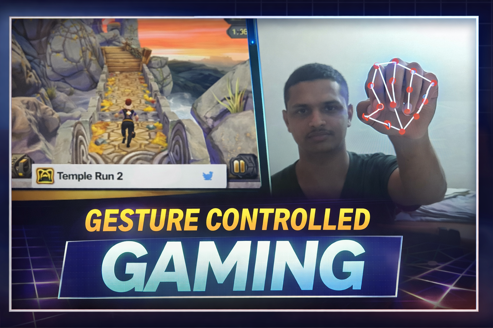

Gesture Controlled Temple Run

Project Overview
This project demonstrates controlling Temple Run using real-time hand gesture recognition.
Tools Used
- Python
- OpenCV
- MediaPipe
- Machine Learning
What We Learned
- Real-time computer vision processing
- Hand landmark detection
- Gesture-to-command mapping